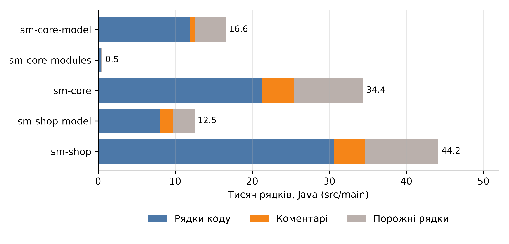
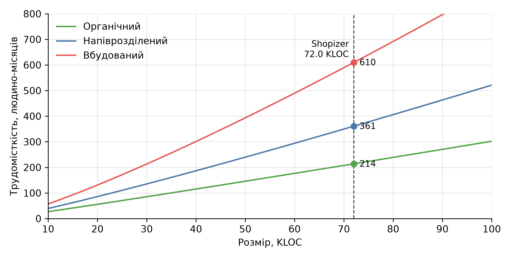
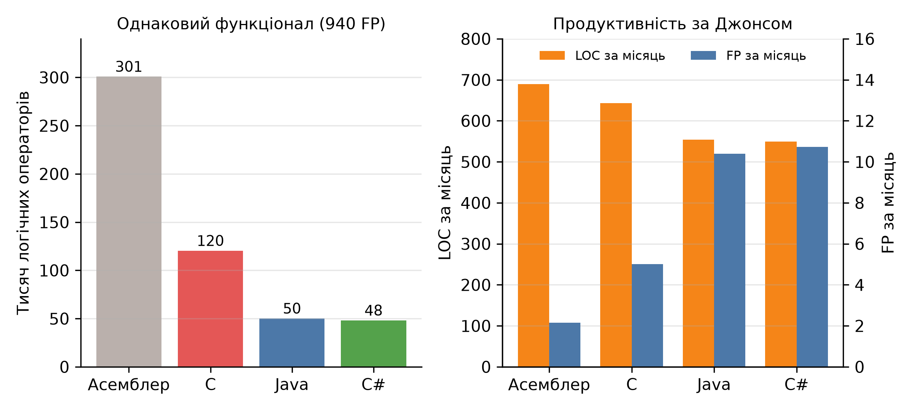

КПІ ім. Ігоря Сікорського · Практична робота № 2
Вимірювання розміру і економічні розрахунки на прикладі Shopizer
Виконав: Соколов Олександр, студент групи ІП-33
Дисципліна «Економіка IT-індустрії та підприємництво»
| Модуль | Файлів | Фізичні | Код | Коментарі | Порожні | Логічні |
|---|---|---|---|---|---|---|
| sm-core-model | 186 | 16 586 | 11 931 | 652 | 4 003 | 7 809 |
| sm-core-modules | 14 | 527 | 317 | 68 | 142 | 237 |
| sm-core | 335 | 34 420 | 21 207 | 4 187 | 9 026 | 15 056 |
| sm-shop-model | 322 | 12 507 | 7 996 | 1 743 | 2 768 | 5 922 |
| sm-shop | 310 | 44 151 | 30 565 | 4 073 | 9 513 | 21 109 |
| Разом | 1 167 | 108 191 | 72 016 | 10 723 | 25 452 | 50 133 |
Основний код Java (src/main). Рівень коментарів F = 0.149

Склад основного коду за модулями
Effort = a · sizeb
Schedule = c · Effortd
Cost = Effort · salary
Базова модель COCOMO [5]; size у KLOC, Effort у людино-місяцях
| Показник | Органічний | Напіврозділений | Вбудований |
|---|---|---|---|
| Трудомісткість, людино-місяців | 214.0 | 360.9 | 609.8 |
| Тривалість, місяців | 19.2 | 19.6 | 19.5 |
| Середня кількість розробників | 11.1 | 18.4 | 31.3 |
| Вартість, $ | 535 121 | 902 364 | 1 524 605 |
| Вартість, млн грн | 24.4 | 41.2 | 69.6 |
| Вартість рядка, $/LOC | 7.43 | 12.53 | 21.17 |
| Продуктивність, LOC на людино-місяць | 336 | 200 | 118 |
Для Shopizer обрано напіврозділений тип: розмір 72.0 KLOC входить у діапазон 25–75 KLOC

Трудомісткість за базовою моделлю COCOMO
| Розмір | KLOC | Трудомісткість | Тривалість | Вартість, $ |
|---|---|---|---|---|
| Фізичні рядки | 108.191 | 569.4 | 23.0 | 1 423 493 |
| Рядки коду (основний код) | 72.016 | 360.9 | 19.6 | 902 364 |
| Логічні оператори | 50.133 | 240.6 | 17.0 | 601 450 |
| Рядки коду, основний код і тести | 75.511 | 380.6 | 20.0 | 951 552 |
Трудомісткість у людино-місяцях, тривалість у місяцях, напіврозділений тип. Між фізичними рядками і логічними операторами оцінка відрізняється в 2.4 раза
| Мова | Рівень (Джонс) | Операторів на FP (Джонс) | QSM, середнє | QSM, медіана |
|---|---|---|---|---|
| Асемблер | 1.0 | 320.00 | 119 | 98 |
| C | 2.5 | 128.00 | 97 | 99 |
| Java | 6.0 | 53.33 | 53 | 53 |
| C# | 6.25 | 51.20 | 54 | 59 |
Рівень L дає приблизно 320 / L операторів на функціональну точку [8, 9]. Джонс ставить C# трохи вище за Java, QSM – трохи нижче

Той самий функціонал (940 FP) за зворотним розрахунком [8]
Повний список – у звіті